(\(){
fnames <- dir(
path = "data",
pattern = ".csv$",
full.names = TRUE
)
years <- NULL
semesters <- NULL
programs <- NULL
graduates <- NULL
for (fname in fnames) {
year <- regmatches(fname, regexpr("-([[:digit:]]{4})-", fname))
year <- regmatches(year, regexpr("[[:digit:]]{4}", year))
year <- as.integer(year)
semester <- regmatches(fname, regexpr("-([[:digit:]]{4})-(autumn|spring).csv", fname))
semester <- regmatches(semester, regexpr("(autumn|spring)", semester))
if (semester == "autumn") {
semester <- "fall"
}
X <- read.csv(file = fname, header = TRUE)
for (program in list(c("Статистик","Статистик, хэрэглээний"),c("Хэрэглээний математик","Математик, хэрэглээний"),"Математик","Физик","Хими")) {
years <- c(years, year)
semesters <- c(semesters, semester)
programs <- c(programs, program[1])
graduates <- c(graduates, sum(X$Хөтөлбөр %in% program & X$Зэрэг == "Бакалавр"))
}
}
data.frame(
year = years,
semester = semesters,
program = programs,
graduates = graduates
)
})() ->
graduatesБайгалийн шинжлэх ухаан, математик, статистикийн мэргэжлээр төгсөгчдийн тооны хандлага
МУИС-ийн бакалаврын хөтөлбөрийг төгсгөгчид
1 Түүхий өгөгдөл
Өгөгдлийг МУИС-ийн Нээлттэй өгөгдөл [1] https://data.num.edu.mn/dataset/graduation веб хуудас дээрээс CSV форматтай файл байдлаар татаж авсан. Татсан файлуудыг data хавтас дотор хадгалав. Файлын нэрийг нээлттэй өгөгдлийн серверээс ирсэн тэр хэвээр үлдээсэн бөгөөд “-YYYY-semester.csv” хэлбэртэй. YYYY нь хичээлийн жилийн эхлэл оныг илэрхийлнэ. Харин semester нь spring эсвэл autumn утгуудын аль нэгийг авна. Жишээлбэл “-2023-autumn.csv” нэр 2023-2024 оны хичээлийн жилийн намрын улирал гэсэн утгатай.
Файлууд CSV форматтай буюу хүснэгтэлсэн мэдээлэл агуулсан. Хүснэгтүүд дараах багануудтай. Баганын нэрийн ард тайлбарыг нь оруулав.
- бүрэлдэхүүн_сургуулийн_дугаар : Бүрэлдэхүүн,салбар сургуулийн дугаар
- бүрэлдэхүүн_сургууль : Бүрэлдэхүүн,салбар сургуулийн нэр
- хөтөлбөрийн_дугаар : Хөтөлбөрийн дугаар
- хөтөлбөр : Хөтөлбөрийн нэр
- зэрэг : Төгсгөж байгаа хөтөлбөрийн боловсролын зэрэг
- төгсөгчийн_эцэг_эхийн_нэр : Төгсөгчийн эцэг/эхийн нэр
- төгсөгчийн_өөрийн_нэр : Төгсөгчийн өөрийн нэр
- дипломын_дугаар : Төгсөгчийн дипломын дугаар
- төгссөн_жил : Төгсөгчийн төгссөн хичээлийн жил
- төгссөн_улирал : Төгсөгчийн төгссөн хичээлийн жилийн улирал
Гэхдээ 2021 болон үүнээс өмнөх оны мэдээлэл агуулсан файлууд дахь хүснэгт үүнээс цөөн баганатай. Багануудын нэрийг тайлбартай нь хамт дор жагсаав.
- бүрэлдэхүүн_сургууль : Бүрэлдэхүүн,салбар сургуулийн нэр
- хөтөлбөр : Хөтөлбөрийн нэр
- зэрэг : Төгсгөж байгаа хөтөлбөрийн боловсролын зэрэг
- төгсөгчийн_эцэг_эхийн_нэр : Төгсөгчийн эцэг/эхийн нэр
- төгсөгчийн_өөрийн_нэр : Төгсөгчийн өөрийн нэр
- дипломын_дугаар : Төгсөгчийн дипломын дугаар
2 Өгөгдөл бэлдэх
Сэдвийн хамрах хүрээний дагуу байгалийн шинжлэх ухаан, математик, статистикийн мэргэжлээр төгсөгчдийн тоог л авч үзнэ. Ийнхүү Статистик, Хэрэглээний математик, Математик, Физик, Хими мэргэжлээр бакалавр зэрэгтэй төгсөгчдийн тоог ялган авлаа. Үүний тулд дараах код бичиж ажиллуулсан.
Ийнхүү бэлдсэн хүснэгт бүтэцтэй өгөгдлийн сүүлийн 10 мөрийг харъя.
tail(graduates, n = 10) year semester program graduates
51 2022 spring Статистик 15
52 2022 spring Хэрэглээний математик 3
53 2022 spring Математик 2
54 2022 spring Физик 0
55 2022 spring Хими 7
56 2023 fall Статистик 4
57 2023 fall Хэрэглээний математик 1
58 2023 fall Математик 1
59 2023 fall Физик 1
60 2023 fall Хими 4Одоогоор төгсөгчдийн тоог семестер бүрээр гаргаад байна. Хэрэв төгсөгчдийн тоог жилээр авч үзнэ гэвэл өгөгдлийг жилээр бүлэглэнэ. Гэхдээ 2023 оны намрын улирлыг 2022 оны хаврын улиралтай нэгтгээд 2022 оны нийт төгсөгчид гэж үзье.
fall_semesters <- graduates$semester == 'fall'
graduates$year[fall_semesters] <- graduates$year[fall_semesters] - 1L
rm(fall_semesters)
suppressMessages({
graduates |>
dplyr::group_by(year, program) |>
dplyr::summarise(graduates = sum(graduates)) |>
dplyr::arrange(year, program) ->
graduates
})Бэлдсэн өгөгдлийг хэвлэж харъя.
print(graduates)# A tibble: 30 × 3
# Groups: year [6]
year program graduates
<int> <chr> <int>
1 2017 Математик 11
2 2017 Статистик 45
3 2017 Физик 37
4 2017 Хими 63
5 2017 Хэрэглээний математик 31
6 2018 Математик 19
7 2018 Статистик 53
8 2018 Физик 18
9 2018 Хими 48
10 2018 Хэрэглээний математик 28
# ℹ 20 more rows3 Өгөгдлийн шинжилгээ
Төгсөгчдийн тооны хандлагыг шугаман диаграммаар харуулна.
ggplot2::ggplot(
graduates,
ggplot2::aes(
x = year,
y = graduates,
color = program,
group = program
)
) +
ggplot2::geom_line(linewidth = 1) +
ggplot2::geom_point() +
ggplot2::labs(
x = "Он",
y = "Төгсөгчдийн тоо",
color = "Хөтөлбөр",
title = "Хөтөлбөрөөр ангилсан төгсөгчдийн тоо, оноор"
) +
ggplot2::theme_minimal()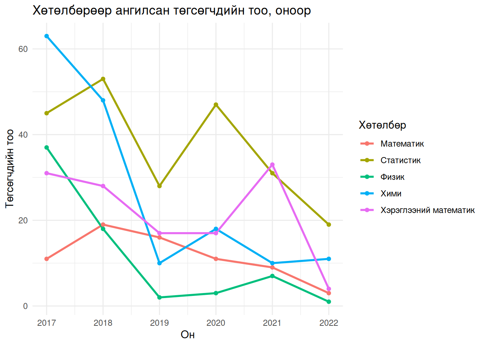
Диаграммаас хөтөлбөр нэг бүрийн хувьд төгсөгчдийн тоо буурах хандлагатай хэмээн таамаглаж болох юм.
3.1 Түүвэр дэх инверсийн тоо ашигласан шинжүүр
Төгсөгчдийн тоо буурах хандлагатай гэсэн таамаглалыг дараах байдлаар томъёолно.
\[ \begin{array}{l} H_0:\,\text{түүвэр санамсаргүй} \\ H_1:\,\text{түүвэр буурах хандлагатай} \end{array} \]
Энэ нь нэг талт таамаглал юм. Хэрэв өсөх хандлагыг авч үзвэл хоёр талт таамаглал болно. Таамаглалыг түүвэр дэх инверсийн тоо ашигласан шинжүүрээр [2] шалгана.
vapply(X = c("Математик", "Статистик", "Физик", "Хими", "Хэрэглээний математик"), FUN = \(program) {
graduates$graduates[graduates$program == program] ->
graduates
outer(graduates, graduates, FUN = ">") ->
inverse
inverse[upper.tri(inverse)] |> sum() -> Tn
length(graduates) ->
n
abs(Tn - n*{n-1}/4) * 6 / n^{3/2} ->
Z
# нэг талт таамаглалын p-утга
pnorm(q = Z, lower.tail = FALSE) ->
p
c(Z, p)
}, FUN.VALUE = c("статистик" = 0, "p-утга" = 0)) Математик Статистик Физик Хими Хэрэглээний математик
статистик 1.83711731 1.42886902 1.83711731 1.42886902 1.0206207
p-утга 0.03309629 0.07652094 0.03309629 0.07652094 0.1537171Гарсан үр дүнг харвал Математик, Физик хоёр хөтөлбөрөөр төгсөгчдийн тоо буурах хандлагатай гэсэн таамаглал \(\alpha=0.05\) ач холбогдлын түвшинд батлагджээ.
3.2 Регрессийн шугаман загвар
Төгсөгчдийн тоо буурах хандлагатай гэсэн таамаглалыг регрессийн шугаман загварын [3] тусламжтай шалгаж болно. Үүний тулд дараах загвар авч үзнэ.
\[ \text{төгсөгчдийн тоо}=\beta_0+\beta_1\cdot\text{он} \]
Энэ тохиолдолд таамаглал дараах хэлбэртэй болно.
\[ \begin{array}{l} H_0:\,\beta_1=0 \\ H_1:\,\beta_1<0 \end{array} \]
Хэрэв төгсөгчдийн тооны өөрчлөлтийг тайлбарлахад цаг хугацаа (он хувьсагч) нөлөөгүй гэсэн таамаглалыг няцаавал энэ нь төгсөгчдийн тоо хугацаанаас урвуу хамаарах буюу буурах хандлагатайг баталсан явдал болно.
Таамаглал шалгалтыг R програм дээр lm() болон summary() функцийн тусламжтай хийнэ. Дор шинжүүрийн статистикийн утга болон \(p\text{-утга}\) хоёрыг хөтөлбөр тус бүрээр олов. Түүнчлэн оношлогооны дөрвөн диаграммыг [4] байгуулсан.
vapply(X = c("Математик", "Статистик", "Физик", "Хими", "Хэрэглээний математик"), FUN = \(x) {
fit <- lm(formula = graduates ~ year, data = graduates, subset = program == x)
par(mfrow = c(2, 2))
plot(fit, main = x)
par(mfrow = c(1, 1))
fit_summary <- summary(fit)
t_value <- fit_summary$coefficients["year","t value"]
p_one_tailed <- fit_summary$coefficients["year","Pr(>|t|)"] / 2
c(t_value, p_one_tailed)
}, FUN.VALUE = c("t статистик" = 0, "p-утга" = 0))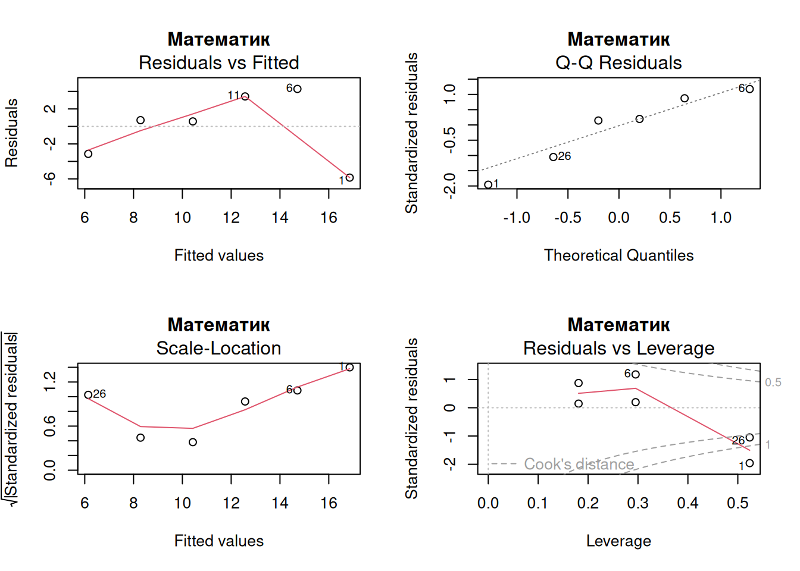
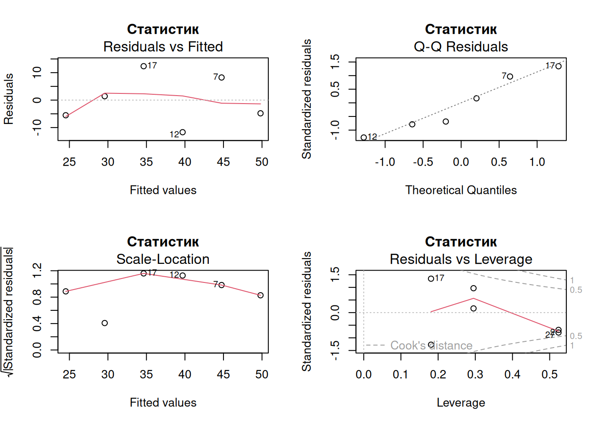
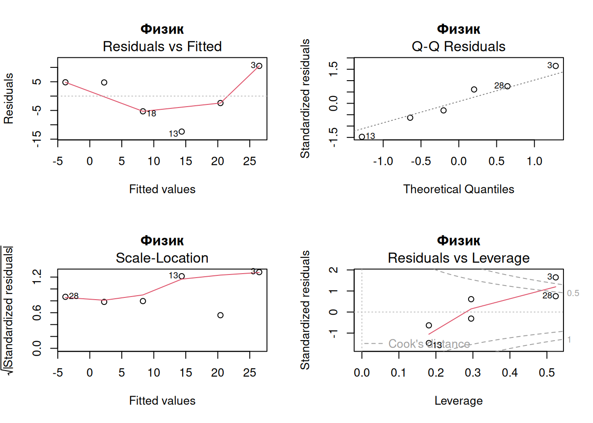
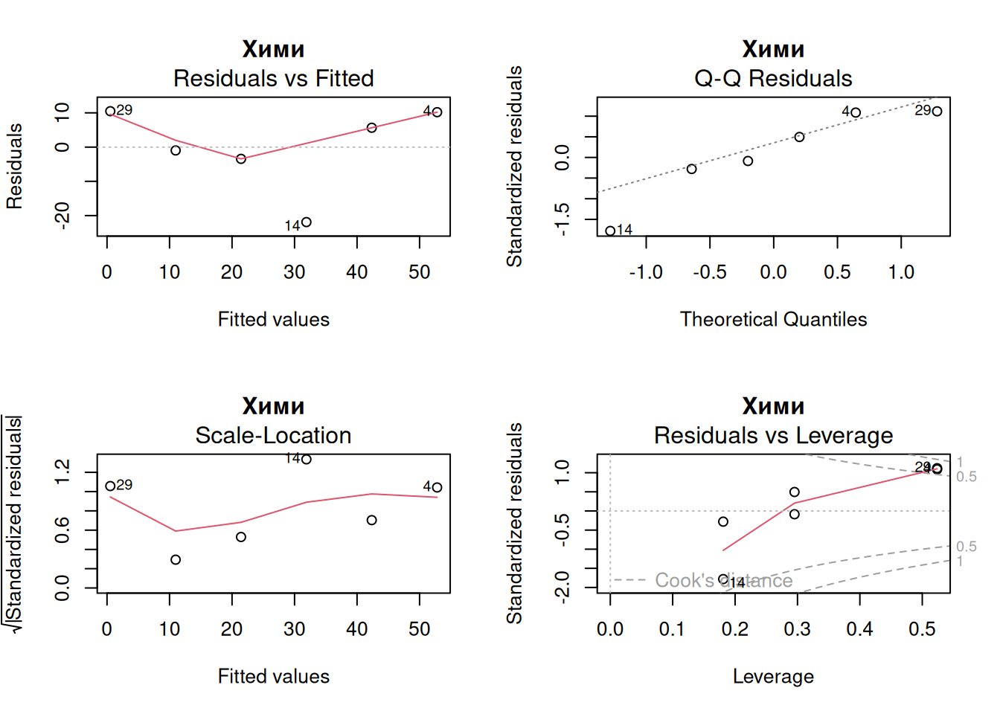
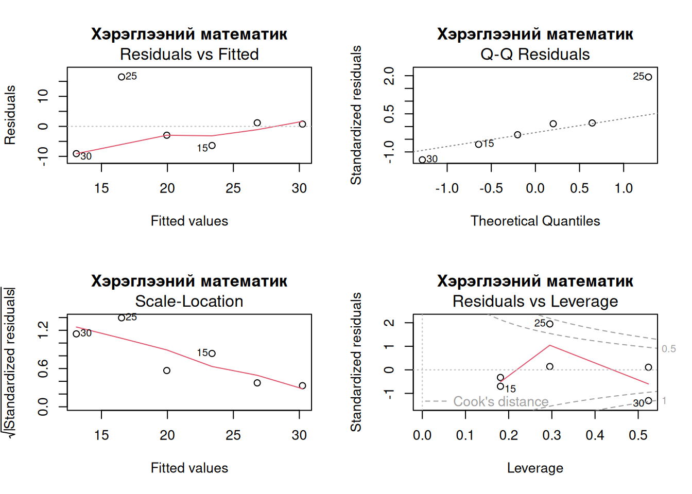
Математик Статистик Физик Хими
t статистик -2.06822787 -2.08129696 -2.73523721 -3.22128521
p-утга 0.05372283 0.05293374 0.02608035 0.01612056
Хэрэглээний математик
t статистик -1.4243052
p-утга 0.1137347Тоон үр дүнг төгсөгчдийн тоо буурах хандлагатай гэсэн өрсөлдөгч таамаглал \(\alpha=0.05\) ач холбогдлын түвшинд батлагдахаар тохиолдол Физик болон Хими хөтөлбөрүүдийн хувьд ажиглагджээ. Гэхдээ эдгээр загваруудын хувьд үлдэгдэл болон хөшүүрэг ихтэй утгууд илэрсэнийг анхаарах хэрэгтэй. Ийм цэгүүдийг өгөгдлөөс хасах эсвэл засах талаар яригддаг ч эдгээр нь ямар ч алдаагүй утга тул хэвээр үлдээнэ.
Хөшүүргээс бусад оношлогооны үзүүлэлтүүдийг сайжруулахын тулд хамааран хувьсагчийг логарифм эсвэл зэрэгт функцээр хувиргадаг. Шинжилгээнд нормал регрессийн загвар ашиглаж буй тул өгөгдлийг уг загварт нийцүүлэн хувиргана. Ингээд Бокс ба Коксын хувиргалт хийнэ.
vapply(X = c("Математик", "Статистик", "Физик", "Хими", "Хэрэглээний математик"), FUN = \(x) {
graduates <- graduates[graduates$program == x,]
fit_original <- lm(formula = graduates ~ year, data = graduates)
bc <- MASS::boxcox(fit_original, plotit = FALSE)
lambda <- bc$x[which.max(bc$y)]
bc_transform <- function(y, lambda) {
if (abs(lambda) < 1e-6) {
log(y)
} else {
(y^lambda - 1) / lambda
}
}
graduates$graduates <- bc_transform(graduates$graduates, lambda)
fit <- lm(formula = graduates ~ year, data = graduates)
par(mfrow = c(2, 2))
plot(fit, main = x)
par(mfrow = c(1, 1))
fit_summary <- summary(fit)
t_value <- fit_summary$coefficients["year","t value"]
p_one_tailed <- fit_summary$coefficients["year","Pr(>|t|)"] / 2
c(t_value, p_one_tailed)
}, FUN.VALUE = c("t статистик" = 0, "p-утга" = 0))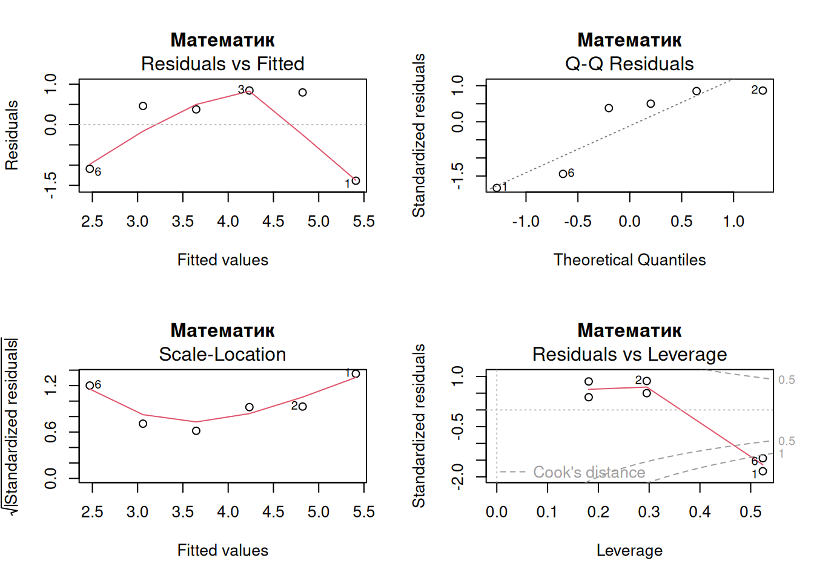
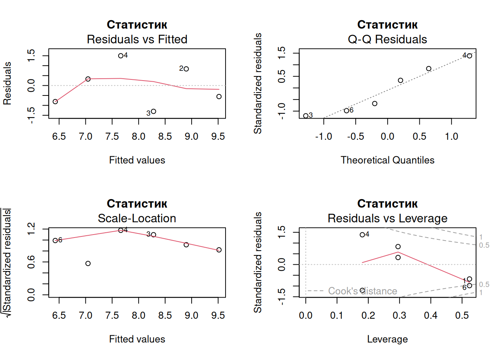
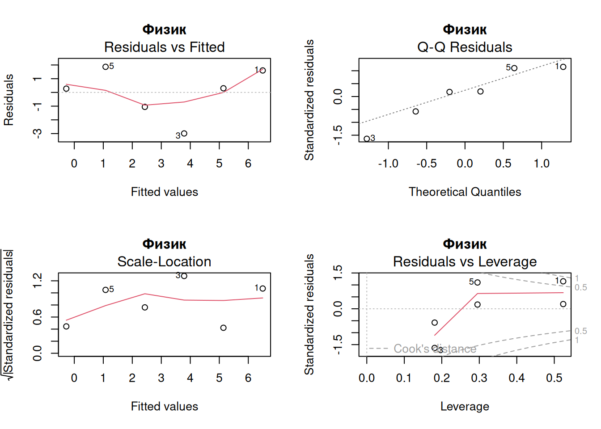
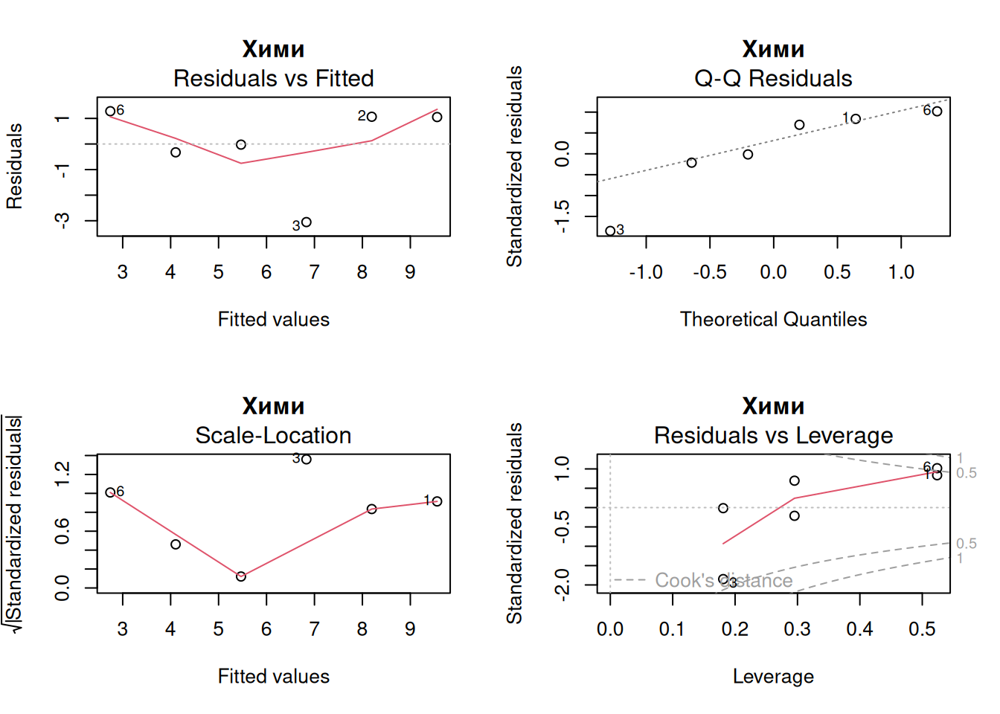
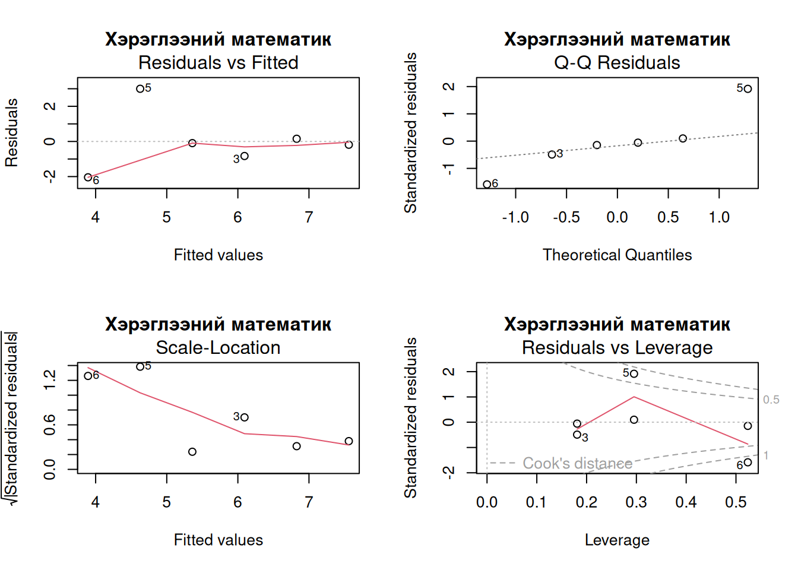
Математик Статистик Физик Хими
t статистик -2.24082030 -2.16230220 -2.8106173 -3.12668788
p-утга 0.04427068 0.04831975 0.0241433 0.01764895
Хэрэглээний математик
t статистик -1.6460384
p-утга 0.0875506Оношлогооны диаграммуудаас ажигласан зүйлсийг дор жагсаан бичлээ.
- Математик хөтөлбөрийн Q-Q диаграммыг харвал нумарсан гэмээр хэлбэр ажиглагдана. Иймээс үлдэгдлийн тархалт ассимметр биш гэж сэжиглэнэ.
- Хэрэглээний математик хөтөлбөрийн Q-Q диаграмм буруу харсан S үсэг шиг хэлбэртэй байгаа нь загварын үлдэгдлийн тархалт хэвийнээс өргөн сүүлтэй байгааг илтгэнэ.
- Ерөнхийдөө оношлогооны дөрөв дүгээр диаграммуудаас их хөшүүрэг бүхий утгууд ажиглагдаж байгаа нь төгсөгчдийн тоо их хэлбэлзэлтэйг илтгэж буй явдал юм. Иймээс анх элсэгчдийн тоог загварт тусган оруулбал энэхүү нөхцөл байдал сайжирна гэж таамаглаж байна.
Харин тоон үр дүн Хэрэглээний математикаас бусад хөтөлбөрөөр төгсөгчдийн тоо буурах хандлагатай гэсэн өрсөлдөгч таамаглалыг \(\alpha=0.05\) ач холбогдлын түвшинд баталжээ.
Дүгнэлт
- МУИС-ийн Нээлттэй өгөгдөл дэх төгсөгчдийн мэдээлэл зөвхөн 2023-2024 оны хичээлийн жилийн намрын улирал дуустал байна.
- Түүвэр дэх инверсийн тоо ашигладаг шинжүүрээр Математик болон Физик бакалаврын хөтөлбөрөөр төгсөгчдийн тоо буурах хандлагатай гэсэн таамаглал \(\alpha=0.05\) ач холбогдлын түвшинд батлагдсан.
- Регрессийн шугаман загвар ашигласан шинжилгээгээр төгсөгчдийн тоо буурах хандлагатай нь Математик, Статистик, Физик болон Хими хөтөлбөрүүдийн хувьд \(\alpha=0.05\) ач холбогдлын түвшинд батлагдав.
- Хэрэв 2023-2024 оны хичээлийн жилийн намрын улирлаас хойших төгсөгчдийн мэдээлэл байвал төгсөгчдийн тооны хандлагын талаарх дүгнэлт сүүлийн үеийн байдлаар, илүү нарийвчлалтай гарна.
- Мөн төгсөгчдийн тоог зөвхөн байгалийн ухаан, математик, статистикийн салбар төдийгүй бусад салбараар бас анх элсэгчдийн тоог авч үзвэл илүү үнэн бодьтой дүгнэлтэд хүрнэ.
Ашигласан материал
[1]
М. У. И. С. (МУИС), “МУИС нээлттэй өгөгдөл.” Монгол Улсын Их Сургууль; https://data.num.edu.mn, 2018--2025.
[2]
Б.Жамъяншарав, “Математик статистик,” Улаанбаатар: МУИС Хэвлэлийн газар, 2023, ch. 3, pp. 153–157.
[3]
Б.Жамъяншарав, “Математик статистик,” Улаанбаатар: МУИС Хэвлэлийн газар, 2023, ch. 5, pp. 217–222.
[4]
J. J. Faraway, “Linear models with r,” Second., CRC Press, 2014, ch. 6, pp. 73–97.